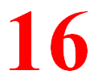
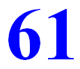

|  |  |
I like to play chess on the internet. It is often the case that players are rated with numbers according to how well they perform. Recently I noticed an interesting bit of number trivia about my rating in a certain type of chess. It said that I had 1661 points! (Not bad, but not the best of the players.)Of course, I was happy, because it was a palindrome. But upon looking more closely, it can be observed that 16 is a square number, and its reverse, 61. is a prime number! Moreover, this is unique for all squares from 1 to 100.
So what do we have here? Well, WTM wants to call something like this a Reversible-Square-to-Prime Palindrome, or RSP Palindrome, for short.
Here is a chart of all numbers less than 100 (with one exception) that produce RSP Pals.
n Square Prime Palindrome Prime Factors 4 16 61 1661 11 x 151 14 196 691 196691 11 x 17881 19 361 163 361163 11 x 32833 28 784 487 784487 11 x 71317 32 1024 4201 10244201 11 x 127 x 7333 37 1369 9631 13699631 11 x 1245421 38 1444 4441 14444441 11 x 17 x 77243 41 1681 1861 16811861 113 x 17 x 743 62 3844 4483 3844483 7 x 112 x 45389 85 7225 5227 72255227 11 x 6568657 89 7921 1297 79211297 11 x 127 x 56701 95 9025 5209 90255209 11 x 79 x 283 x 367 97 9409 9049 94099049 11 x 232 x 103 x 157 Now, dear reader, you are invited to continue this list. Send any results you find and WTM will post them here.
As to the exception referred to above... 402 = 1600. The reverse of 1600 is either 0061, or 61 if the leading zeros are suppressed. This gives us 16000061 and 160061 as two more RSP Pals for this range.
Next, the curious thinker should be asking himself... what about cubes and their reversals? Do similar cases exist for RCP Palindromes? The answer is not long in coming to light. Observe:
53 = 125 521 is prime. Hence 125521 is a RCP Pal. Except for the trivial 503 case, how many RCP Palindromes can be found for n < 100?
| Comments? Send e-mail. | Back to top | Go back to Home Page | Go back to Contents |